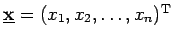

Inhalt Index DeskTop Bronstein

 Lineare Algebra Eigenwertaufgaben bei Matrizen Spezielles Eigenwertproblem Hauptachsentransformation quadratischer Formen
Lineare Algebra Eigenwertaufgaben bei Matrizen Spezielles Eigenwertproblem Hauptachsentransformation quadratischer Formen


Eine reelle quadratische Form Q in den Variablen  hat die Gestalt
hat die Gestalt
Dabei ist  der Vektor der Variablen, und  ist eine reelle symmetrische Matrix.
ist eine reelle symmetrische Matrix.
Die Form Q heißt positiv definit oder negativ definit, wenn sie nur positive bzw. nur negative Werte annehmen kann und den Wert Null nur für das einzige Wertesystem annimmt.
Die Form Q heißt positiv oder negativ semidefinit, wenn sie nur Werte desselben Vorzeichens, den Wert Null aber auch für ein nicht durchweg verschwindendes Wertesystem annehmen kann.
Entsprechend dem Verhalten von Q wird auch die zugehörige reelle symmetrische Matrix A als positiv oder negativ definit bzw. semidefinit bezeichnet.